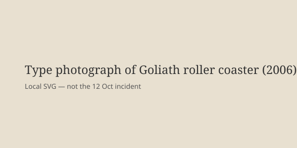

Georgia · accident · 12 October 2026
One person died and several were injured in an incident on the Goliath roller coaster at Six Flags Over Georgia.
_13.jpg)
What is agreed across desks
On the afternoon of 12 October 2026, one person died and several others were injured at Six Flags Over Georgia, near Atlanta. Cobb County police’s major crimes unit is investigating. The park confirmed a “guest incident” and expressed condolences. Aerial footage and witness accounts described the Goliath roller coaster stopped on an elevated section, with riders being evacuated. Multiple witnesses told local and national outlets that they saw a man fall from the ride, strike the train more than once, and land on a structure below. Officials have not publicly confirmed the precise mechanism of death or the identities of those injured. Six Flags stated it temporarily closed nine similar rides at other parks “out of an abundance of caution.” The Goliath opened in 2006, was manufactured by Bolliger & Mabillard, and is described by the park as reaching approximately 70 mph.
What is only a quote
Witness descriptions of the fall sequence are accounts, not forensic findings. The park’s statement of sadness is a corporate response. Claims that a restraint failed, that a medical event occurred, or that the ride malfunctioned are hypotheses until the police and any manufacturer investigation publish results. No official cause has been released.
Mechanism a reader needs
Roller-coaster fatalities are rare relative to the number of rides taken annually in the United States. When they occur, investigations typically examine restraint systems, rider behavior or medical condition, maintenance records, and whether the train stopped for an unrelated reason. Goliath is a hypercoaster with a steep first drop. A person leaving the train mid-ride is an extremely uncommon event; most modern restraints are designed to prevent it under normal operation. The temporary closure of similar rides at other parks is a standard industry response while the cause is unknown; it does not itself establish a design defect.
Cobb County police have jurisdiction. Their major crimes unit investigates fatalities that are not immediately explained as medical. Theme-park operators cooperate because their operating permits and insurance depend on it. Public updates usually come first from police, then from the park, and later from any independent safety board or manufacturer report. As of 13 October none of those later documents exist. The number of injured has been reported as “several” or, in one local account, four; the precise figure and their conditions have not been confirmed by police in a single public statement.
For readers: amusement-park rides are regulated at the state level in Georgia. Daily inspections and periodic certifications are required. A single fatality triggers both a criminal investigation (if warranted) and a regulatory review. The photograph used here is a 2006 image of the ride structure; it shows the type of attraction, not the condition of any restraint or the location of any person on 12 October.
What this story is not
It is not a finding of mechanical failure or of rider error. It is not a photograph of the incident or of the deceased. The image above is a type photograph of the coaster taken in 2006.

Source articles and scores
Image: Wikimedia Commons type photograph of Goliath (2006) via Special:FilePath. Caption states it is not the incident scene. onerror to local SVG. No crossorigin.